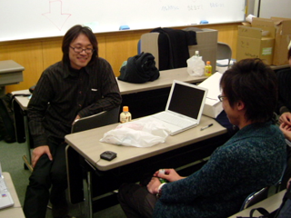

Rubyist Hotlinks 【第 13 回】 関将俊さん
はじめに
著名な Rubyist にインタビューを行う企画「Rubyist Hotlinks」。今回は、ERB、dRuby などで有名な関将俊 (咳) さんにお話を伺いました。
今回のインタビューはまつもとさんも講演したオブジェクト倶楽部 2005 クリスマスイベントで突発的に行われました。偶然ささだと咳さんがお会いできたからです。というわけで、突発的なところ (？) をお楽しみください。
プロフィール
 横須賀生まれ。生まれた年は秘密。
横須賀生まれ。生まれた年は秘密。
分散オブジェクトライブラリ dRuby や pure Ruby 版 eRuby 実装である ERB などの作者として知られる。 他にも一風変わったアプリケーションやライブラリを多数作成している。 著作に『‘dRuby による分散オブジェクトプログラミング’』と『‘dRuby による分散・Web プログラミング’』がある。また、『UNIX USER』誌への寄稿がある。
現在は栃木県の那須に在住。
- 好きな言葉
- 「無理をしない」
- 尊敬する人
- 今一緒に仕事してる人たち
- ご本人のサイト
- I like Ruby.
インタビュー
- 聞き手
- ささだ (記事中「笹田」)
- 語り手
- 関将俊さん (記事中「咳」)
- 野次馬
- 須藤さん、角谷さん、伊藤さん
- 日にち
- 2005 年 12 月 16 日
- 場 所
- 国立オリンピック記念青少年総合センター
目次
- はじめに
- プロフィール
- インタビュー
- おわりに
- Rubyist Hotlinks 連載一覧
プロフィール
好きな言葉、座右の銘
笹田 じゃあ咳さんに、いろいろ聞いてきたいと思うんですけども。 なかなか答えてくれる人がいない「好きな言葉座右の銘」はいかがでしょうか。
咳 ないですね。
一同 (笑)
咳 好きな言葉は「無理をしない」。
笹田 「無理をしない」。
須藤 おじいちゃん……。
一同 (笑)
咳 一応セールスポイントのところに必ず毎年書いてますけど。「無理をしない」。
笹田 無理をしない人生とか設計とかですか。
咳 (笑) 設計はわかんないですけど。
笹田 じゃあ、お仕事とかは無理しないんですか。
咳 そんなにしないですね。
笹田 三日間寝てませんとか、そういうことはしない？
咳 ああもう全然。
角谷 車で仮眠されたりとかします？
咳 いやないですよ、それ。
須藤 お昼寝しますよね！
一同 (笑)
咳 そっか。
角谷 お昼寝はどこでやってるんですか。駐車場？
咳 いや会社で。
角谷 あ、会社ですか。車の中とかでやってるのかなと。
須藤 冬眠はしないですか。
咳 しないですね。
尊敬する人
笹田 尊敬する人。
咳 尊敬する人か……。あんまない……。スポットでいくと、今一緒に仕事してる人たちは尊敬できる。
笹田 ああ、無難なところで。
咳 でも、るびまっぽくないから切っていいです (笑)
笹田 いやいや (笑) すばらしいことで。
代表作
笹田 代表作。dRuby？
咳 eRuby ですかね。
笹田 eRuby？
咳 ERB とか。
笹田 そっちか。
咳 ユーザーベースで。
一同 (笑)
角谷 Rails には dRuby も入ってますね。
咳 あーそうなんですか。
角谷 ええ。デバッガに使われているようです。
咳 あー。
須藤 デバッグしてるかどうかはわかんないですけどね。
咳 デバッガについてはあんまり語りたくない (笑)
笹田 irb と dRuby を重ねて、なんかリモートデバッグとかいう話でしたっけ？
角谷 そうそう。私はちゃんと使ったことないけど。
笹田 どちらもすごくたくさん使われてますよね。
咳 dRuby 使われてるんですかね。
笹田 dRuby は本もあるし、使ってる人も……。
咳 dRuby 本のレビューアが一番使ってるんじゃないか。
一同 (笑)
笹田 うーん。
須藤 レビューしたとき一回も動かしてないですよ……。
咳 (笑)
著作
笹田 著作。
咳 著作は dRuby の本二冊
 。あとなんか雑誌があった気がするんだけど。
。あとなんか雑誌があった気がするんだけど。
角谷 『UNIX USER2』が。
咳 『UNIX USER』ありましたね。二回くらい書いたか。一回かな？ 二回書いた覚えがあるけど3。
須藤 IP なんとか。
角谷 メッセンジャー。
咳 うん。ユーザー数 1 だったんですけど。
角谷 (笑)
笹田 何の話ですか。
角谷 div？
咳 div のネタで。
須藤 ディブって読むんですか……。
咳 で、IP メッセンジャーを書くやつがあって。
笹田 なるほど。
咳 自分用だったんですけど。なんであれが記事になったか分からない。
好きなメソッド、嫌いなメソッド
笹田 ええと、好きなメソッド嫌いなメソッド。
咳 好きなメソッドは、前回言ったけど inject……が使えるときが嬉しい。
笹田 あー、ツボにはまったときの。
咳 うん。
嫌いなのなんかあるかな、特にない……。あのフック系がよくわかんないです。メソッドが定義されたときのフックとかなんかなかったでしたっけ。
笹田 method_added とか？
咳 うん
笹田 inherited とか。
咳 覚えきれない。
須藤 ああいうの大好きです。
咳 (笑) ああそう。
須藤 ああいうのと eval はもう大好きで。
咳 eval は分かるんだけど。
笹田 YARV では eval やったら sleep(2) を一秒入れようかとかちょっと考えてるんですけど4。
一同 (笑)
笹田 お前ら使うなと。まあいいや。
咳さんと Ruby
Rubyist になったきっかけ
笹田 Ruby 関係の話を聞いていこうという思います。Rubyist になったきっかけというのは、なんだったんでしょうか。
咳 んと、NetNews でまつもとさんが「オブジェクト指向スクリプト言語を作りました」って言って流されたとき があって。SGI5 でコンパイルしようとしたら全然通らなくて。しばらく寝かしてたんですけど、気がついたら普通に make できるようになってた。
笹田 ふーん。
咳 で、ちょっと覚えてないですけど 1.2 とかそんなんだと思いますけど。
笹田 最初からそういうのに興味があった？
咳 そうですね。
笹田 なんか他のをなんかやっててそれに関連してとかじゃなくて？
咳 他のって？
笹田 たとえば Python とかやってて Ruby もあるんだとか。
咳 あー、そういう意味だと ObjectPascal。
笹田 ほうほう。
咳 ずっと C 書いてて、興味はあるけど処理系がなくて触れないっていう感じ。
笹田 あー、じゃあオブジェクト指向言語みたいなものに関して興味があった？
咳 そうですね。
笹田 で Ruby が出てきて、と。なるほど。 じゃあ、出てきたときすぐに？ いちばん最初に NetNews のポストのときにもうすでにチェックしてた？
咳 うん。チェックしてた。で、ビルドできなかった。
笹田 でまあ、しばらく追ってみて 1.2 くらいでできて。
咳 うん。
笹田 で、動くようになったから手をつけた、と。dRuby とかはその後すぐ作られたんですか。
咳 多分そうだったような。
笹田 またなんかすごいですよね。分散系に話を持っていこうとするとか。
咳 あー。そうですね、その前に eRuby があったのかな。
笹田 すぐにそうキラーライブラリを作って。
咳 キラーになってないんじゃないですか。
笹田 え、だって Ruby って言ったらぱっと出てくる中に多分 eRuby は入るかと。eRuby なり dRuby なり。
咳 そうですか？
笹田 特徴的なライブラリなんですかって言われたら、それらを挙げたいと思います。
須藤 前からネタはあったんですか。
咳 dRuby はあったんですけど、eRuby はなくて。ただ、まつもとさんがこういうの考えてるって言っていたから、ああそうなんだと思って。
笹田 それで作った？
咳 多分最初はひどい実装だった気がしますけど。
Ruby とのつきあい
笹田 現在の Ruby とのつきあいかたというのはどんな感じなんでしょう。Ruby 使ってますか？ 開発とかで。
咳 Ruby 使ってます。え、開発？ 開発支援では使ってるけどターゲットには使ってない。
笹田 なるほど。ユーティリティー的に。
咳 一番大きいのが RWiki が。
笹田 あー、なるほど。自分で使う Wiki はみんな RWiki なんですか。
咳 そうですね。あんま Wiki として使ってないですけど。
笹田 何に使ってるんですか？
咳 オブジェクトデータベースみたいな感じで。
笹田 どういう意味ですか？
咳 RWiki に関して言うと、RD は単にオブジェクトを作るために使われているに過ぎない。RD を使ってオブジェクトを抽出して、永続させてる空間にオブジェクトを置きっぱなしにする。で、それの表現形態として HTML を返すっていうのが RWiki のコンセプトで、今は RD の構文情報とかから属性とかを取り出せるようになっていて、今でいうと YAML みたいな書き方でデータをつっこんでおける。
笹田 それを何に使うんですか。
咳 それを今、XP のストーリーカードの管理に使ってるんですけど、その内容だけじゃなくて中からいろんな統計情報とか、テストケースだけ取り出すとか。
笹田 ひとつのフレームワークとしてそれを使ってるってことですか。
咳 そうですね。
笹田 では、開発管理なんかもそれで？
咳 うん。
笹田 なるほど。 
Ruby の好きなところ、嫌いなところ
笹田 Ruby の好きなところと嫌いなところ。
咳 好きなところは、さっきまつもとさんが言ってたんですけど、ダイレクトに書けるっていうのが。
笹田 ああ、確かに言ってましたね。ダイレクトって。 嫌いなところってありますか。
咳 嫌いなところはあるかなぁ……。dRuby とか ERB を標準添付にしてしまったので、バージョンアップとかに付き合うのが。付き合うっておかしいんですけど、仕様変更とかずっとウォッチしてなきゃいけない。でも昔に比べるとまつもとさんがユニットテストしてくれるので、何かがあったら分かるようにはなったので、もしかしたらいいことのほうが多いかもしれない。
笹田 なるほど。添付されちゃうとリリースとかめんどくさいですよね。
咳 あと、機能拡張っていうか仕様変更が。Ruby のリリースとあわせて、どうしていいのかわかんないですよね。
笹田 ええ。
咳 もういいやっていうか。
須藤 (笑)
笹田 今は別のレポジトリかなんかで管理してるとかはしてない？
咳 うん。二重になっちゃうからめんどくさいんで。
笹田 なるほど。
咳 かといって dRuby 単体などでリリースするタイミングもないしと思って。
笹田 あー。
咳 自分で dRuby を fork するか？ っていうと、なんだかなぁ、とか。
一同 (笑)
須藤 dRuby3.0。
咳 fork するのもいやだし。
笹田 xdrb とか。
須藤 HEAD と ruby_1_86 の方に二回 commit するの嫌じゃないですか。
咳 そうそう、それも嫌だよね。でも仕様が違うので。send が変わりましたよね、HEAD のほうで。
須藤 funcall7 ですね。
咳 うん。
須藤 いつのまにか変わってた。
咳 うん。私言ってたときはなんか全然スルーだったのに (笑) 突然変わっててびっくりしちゃって。
笹田 「咳さんが変えてって言ったんじゃん」ってやつですね。
咳 (笑) 知らないうちに変わってた。
Ruby を使った成功事例
笹田 では、Ruby を使って成功だった事例みたいなのはありますか。これは Ruby でよかったとかっていう。
咳 事例？ 事例ってなんですかね。製品ってこと？ システムとか。
笹田 まぁ、なんでも。
咳 本書けたとか (笑)
一同 (笑)
笹田 Ruby 使ってよかったことかな？ よかったことっていうか、Ruby がうまくはまったこと。
咳 Ruby がはまったことってあるかな。
笹田 こういうことを書こうと思ったら Ruby でならうまく書けた、みたいな。
咳 あるかな、思いつかないな。dRuby は Ruby じゃないと書けない気がしますけどね。
笹田 あー、なるほど。
咳 RWiki は他でもできそうな気もするけど。Squeak でもできる気がする。
笹田 えー？
咳 できないのかな。
須藤 いやできるでしょうけど……。イメージ立ち上げるのが嫌です (笑)
Ruby のキラーアプリ
笹田 自分にとって、これはキラーアプリというかキラーライブラリとか、なんかそういうものはありますか？ Ruby の。
咳 自分にとって？
笹田 うん。よく使うとか。
咳 irb。
笹田 irb 使いますか。
咳 足し算とかでもすぐ使う。
笹田 あ、計算機のかわり？
咳 まずは。ふだんもう立ち上げっぱなしで。
須藤 えーっ。そうだったんですか。
咳 irb 端末が一個。
一同 (笑)
笹田 じゃあ、Ruby がどうのっていうわけじゃなくて？
咳 Smalltalk の workspace みたいなかんじで繋げっぱなしで、例えば今のイテレーションの状況とかって計算するときに irb から直接 RWiki に繋いで結果ばーって。
笹田 あー、なるほど。すげーかっこいい。
須藤 かっこいい。
角谷 かっこいい。
笹田 じゃあ、それはシェルを irb にしてるような感じ？
咳 そんなことはないですけど (笑)
角谷 咳さんの本もずっと irb を。
咳 そうです。
角谷 二つ上げて。
咳 あれで Windows で動かないとは思ってもみませんでした (笑)8
笹田 (笑)
須藤 動かないんですか？
咳 HEAD は動くんでしたっけ。gets が固まっちゃうので irb がマルチスレッドにならないっていうのが。
笹田 えぇ。まあ、うささん9の努力の結果変わったらしいので。
咳 じゃあうささんネタと。
Ruby の習得について
笹田 Ruby の習得は簡単でしたか。
咳 え？ 習得？
笹田 習得。
咳 特に苦労はなかったです。
笹田 特に困ったこととかもなかった？
咳 いまだに class variable とかよくわかんない。
笹田 (笑)
咳 クラスのインスタンス変数とクラス変数と。
笹田 あー、なんか違うみたいですね。
咳 違いますよね。
笹田 俺もわかんねー、とかいって (笑)
須藤 実装できないじゃないですか。
笹田 いやあのへんはもう全部今あるやつを使っちゃってるんで。関数呼ぶだけ。問題なし10。
須藤 あー。
笹田 この間ちょっと調べてみたら、クラス変数を取る Ruby の API ってなんか引数を二つ取るんですけど、あ、三つかな、三つ取るんだけど、その三つ目がどうやら現在の Ruby では使われてないらしくて (笑) それどう使えばいいのか……。なんか盲腸みたいに。
須藤 (笑)
笹田 いやまあ、いいんですけど。
咳 それは直さないんですか。
笹田 きちんと私が仕様を理解したらということで (笑)
ちょっと違う話でしたね、すいません。 あとさっき言ってたフック系の話とかですか。他は。よく言われるイテレータとかその辺とかは。
咳 イテレータは特にないです。Smalltalk とかでやってたんで。
笹田 Smalltalk やってたんですか。
咳 ちょこっと。遊びで。
Ruby 以外のプログラミング言語
笹田 では、そんな感じで他のプログラミング言語の話も聞いてみたいと思うんですけど、はじめてコードを書いたのは？ いつくらいで何を書きました？
咳 何を書いたら覚えてない……。ああ、何って言語ですか？ 言語は BASIC でした。
笹田 言語は BASIC で。
咳 なんだっけな、SP-503011って書いてあった気がする。シャープの MZ というやつに入っているテープで提供されてた BASIC があって。
笹田 それ、いつぐらいですか。
咳 中学ぐらいかなぁ。
角谷 ほー。
須藤 学校で触れたんですか？
咳 学校でやったわけじゃないですけどね。
笹田 おうちに？
咳 うん、借りて。
笹田 なるほど。
そのへんは生い立ちのほうでもうちょっと聞くとして、Ruby 以外のプログラミング言語では何を使われていますか。
咳 C が一番多いような気が。
笹田 お仕事がそういう C でシステム開発？
咳 そうですね、C とか C++ とか。
笹田 好きとかいうのはなんかありますか。
咳 好き？ C が好き。
笹田 あ、C が好き？ どのへんがとかってあります？ 簡単なところとか。
咳 C++ よりもオブジェクト指向っぽく書ける。
一同 (笑)
咳 抽象データ型とかは結構あっさり書けるっていうか。
笹田 継承とかなんとか考え出すとめんどくさいかなーとか。
咳 そうですね。late binding12 さえ考えなければ十分抽象的に書ける。
笹田 なるほど。まあ、C が好き、と。
んと、今まで読んだ中でもっとも美しいソースコードはなんですか。
咳 そんなに勉強してないんですよ。
笹田 じゃあスルーで。
えーと、今プログラミング関係で興味を持っているテーマ。何かありますか。
咳 プログラミング関係か……。Groovy の来年のプレゼンが見たい。とか。
一同 (笑)
角谷 意味わかんないそれ。

須藤 Groovy の来年のプレゼンを Rabbit で見たい (笑)
一同 (笑)
咳 どんなふうに奇妙な冒険なのかを (笑)
あとなんかあるかな、プログラミングって、なんかあるんですかね。
笹田 なんだろう、dRuby の次のテーマとか。
咳 あー。
結局、流行ってるものがなんか苦手みたいなんですよね。去年 DI13 よく分かんないとか言ってたんですけど。今 Rails よく分かんない。きっとすごいんだと思うんですけど。
笹田 DIV でいいじゃん？
咳 誰か説明してくれっていう。
笹田 Rails は自分では使わない？
咳 適用する要求がないっていうか、思いつかない。ブックマークだったら SQL つかわなくていいじゃん (笑)
あ、今、分散じゃなくてオブジェクトデータベースを、ファイルベースのやつを書いてるんですけど。
笹田 ほぉー。
咳 それは OR Mapper って本当はなんだか分からないので、なんでそれが必要なんだろうっていうのがあって。永続化とかって何に使うのかなーって思って、書いてみようかなと。
笹田 え、今だいたいできてるんですか。
咳 動いてるんですけど、アプリケーションが思いつかない。
須藤 PRb でしたっけ。
咳 Koya。
須藤 あー。
咳 いちおう一通りのことはできてて、で、一番底にはなんだっけ、SQLite14 をストレージとして使ってるんですけど。スキーマなんかは一切なくて、そのまんまオブジェクトが突っ込める。それだけ。
笹田 なんかけっこう、ありそうでないですよね。Ruby でオブジェクトデータベースって。
咳 PStore がすばらしいのではないですかね。
笹田 いやオブジェクトデータベースというよりはかなりあれ明示的に使うじゃないですか。
咳 うん。
笹田 クラスを継承したらなんか勝手に永続化クラスになってしまう、とかが簡単でよさそうですけど。
咳 そうですねえ。ただ、果たしてシームレスなのが本当にいいことなのか、とか。
笹田 あー。
咳 誰がコードを持つべきなのか、ストレージにあるべきなのかプログラムがコードを持つべきなのか、とか。
笹田 今度のやつは？ 全部シームレスにできちゃうやつですか。
咳 今はストレージの中に入れるとこは一見シームレスです。けど、コードはアプリケーションが持っている。
笹田 明示的に突っ込まないと入らない？
咳 オブジェクトの生成のときに、明示的に作る。それ以降はもう見えない。
笹田 なるほど。
咳 ただしあらゆる操作が誰かのトランザクションに入ってなきゃいけないので、明示といえば明示。
笹田 なるほど。面白そうですね。
須藤 あれ重いんですか。そんなことないんですか。
咳 前に作ってた PRb に比べれば圧倒的に速い。前、それを Postgres で書いたんですけど、Postgres なんだけど意地でも標準 SQL だけで書いてやろうと思って。
須藤 (笑)
咳 Ruby のオブジェクト空間をそのまま SQL にマップしたんですよ。
須藤 あの 1 がなんとか15とかそういうのまで。
咳 そそ。ObjectID が何が false とかあるじゃないですか16。あれそっくりそのまま移植して。
笹田 なるほど。
咳 結局一次元の巨大な空間でしかないですよね。だからそれをそのままシミュレートした PRb っていうのがあったわけです。でも、RWiki の RD 木を突っ込むのに何分もかかるので、これはもうダメだろうっていうか、真面目にやってたのは面白いけど面白いだけみたいな。
笹田 普通のオブジェクトとか ID 変わってもそれなんとかするってことですか？
咳 いや……。
笹田 プロセスが変わった時点で多分 ID 変わるじゃないですか。
咳 そうですね、だからその ID じゃなくて、データベース上にある ID がその ID になるのね。だから dRuby でいうと dRuby のリファレンスの数字が、中に入ってる SQL 上の数値、インデックスを示しているので、どのプロセスから見てもストレージの中に入ってる n 番は同じオブジェクトであり続ける。
笹田 なるほど。
咳 で、それをやってもいい事が起こらない。
笹田 ちなみにガーベジコレクションとかその DB には。
咳 入ってますよ。
笹田 じゃあ適当なタイミングで？
咳 いや明示的に今呼んでますけど、適当なタイミングを作るのはアプリケーションかなと思ってるんで。
笹田 なるほど。
咳 保護されてなくて参照されてないオブジェクトはきれいに消えるように書いてある。

生い立ち
年齢は不詳
笹田 ちょっとこれを話してると時間がなくなっちゃうので、生い立ち。
咳 生い立ち？
笹田 どこで生まれてどこで死んで。いや死んでない。
咳 年齢とかいいたくないんですけど (笑)
須藤 えー。
咳 (笑)
須藤 そんな歳でしたっけ。
笹田 まあ 20 代前半ということで (笑)
咳 (笑) そうですね。
笹田 生まれたのはどのへんですか。
咳 横須賀っていうところで。
笹田 ずっとそっちで？
咳 そうですね。
笹田 小学校とか中学校とか興味を持ってたこととか。
咳 もう思い出せません。
須藤 二十歳そこそこですよね (笑)
笹田 文系理系というか、なんだろうな、体動かすのが好きだったとか本を読むのが好きだったとか、そういう傾向みたいなのは？
咳 乗り物系好きだったかもしれないですね。
笹田 乗り物系？
須藤 働くなんとか？ (笑)
咳 チャリンコとか載ってましたね。なんか高いやつもらって。
笹田 チャリンコで自分探しの旅に。
咳 自分探しはしなかったかな。
須藤 オブジェクト探しの旅に。
一同 (笑)
笹田 じゃあ比較的体動かす感じの？
咳 そう。でもみんなでやるのいやなんですよね。一人でやることばっか (笑)
中学校で BASIC
笹田 で BASIC とかって、なんで興味持ったんですか？ さっき中学校でっていう話でしたけど。
咳 いやなんだろ、流行ってたんじゃないですかね、パソコン。第一次パソコンブームだったりとかしないですかね。
須藤 「流行が嫌い」って……。
一同 (笑)
咳 いや NEC じゃなかったですよ。
一同 (笑)
笹田 ちょっと違うんだ。で、ずっとそこからパソコン少年というわけではなかった？
咳 どうですかね、そんなにやってなかったかな。
高校でパソコン
笹田 その後高校とかで部活とかは。
咳 高校とかでパソコンを買った覚えがありますね。
笹田 何買ったんですか。
咳 やっぱシャープのでしたね (笑) テープはクイックディスク17になってました。
笹田 なるほど。20 代前半で (笑)
咳 (笑)
笹田 部活とかは？
咳 部活はやってないです。
笹田 じゃあなんだろ、パソコンもやったりとか。何やってたんでしょうか。
咳 思い出せない (笑)
笹田 じゃあそういうことにしておきましょうか。
須藤 GC されちゃいました…… (笑)
笹田 そのあと大学。
咳 そうですね。
大学で画像認識、パターン認識
笹田 大学のほうは何をされてたんでしょうか。
咳 大学は経営情報学部とかいうところで。
笹田 いわゆるプログラミングとか関係ない？
咳 プログラミングもやりましたよ、そこで結構……。なんだっけな、ADT18 とか……。
笹田 あ、そんなことやるんですか。
咳 そういうの好きな先生がいて。あと、普通に情報っぽいやつがそれなりにあって。
笹田 ふむ。
咳 Lisp の課題に Smalltalk で出しちゃった (笑)
須藤 その頃から Smalltalk を。
笹田 え、いわゆる文系ですよね、その学科は。
咳 一応分類すると文系になるんですけど、やってることは理系に近い。
笹田 あ、そうなんだ。なんか経済の歴史とか経済の理論とか。
咳 経済と経営はまた違うみたいですね。
笹田 違うんですか。
咳 よく知らないですけど。経済知らないので (笑)
笹田 へー。で、そんな感じで大学のその後は。
咳 それで、画像認識とかパターン認識とかやってたんですよ。
笹田 研究室で？
咳 うん。ひとりで。
笹田 その頃は何使ってたんですか。
咳 その頃は ObjectPascal。
笹田 あ、その頃に。
咳 Apple のほうの ObjectPascal19
笹田 ふーん。
咳 ときどき VAX20 で C でっていうのもありましたけど。
笹田 すげー。
角谷 いつから Mac？
咳 Mac はねぇ、大学の頃から。
笹田 その頃だと、機種はなんですか。
咳 SE/3021 とかですね。
笹田 あー。
須藤 二十歳……。
一同 (笑)
就職〜現在
笹田 で、そのまま大学を出られたんですか？ それとも大学院などに行かれたんですか。
咳 大学で卒業で就職して。
笹田 就職は今のところへ？
咳 そうです。
笹田 その後はずっと今と同じ仕事をされている？
咳 うん、ずっと同じ。
笹田 ちなみにシステム系？ 詳しく言うとどんな感じっていうのは。
咳 どんな分類があるんでしたっけ (笑)
笹田 (笑) なんだろう、何作ってるとか。
咳 組み込み？
笹田 あ、そうなんだ。
咳 組み込みですけど、でも実際には多分想像している組み込みよりもずっとアプリケーションよりの組み込み。装置に入れて売るソフト。
笹田 ほう。どんな装置？ 言える範囲で結構ですので。
咳 医用機器とか。
須藤 Ruby はどこで動いてるんですか？
咳 どこでって？
須藤 あれ？ 動いてるんでは。
咳 製品には載ってない。
須藤 でも会社で。
咳 うん。開発用の環境とかで動いてる。製品には載ってない。
笹田 じゃあ、分散とかっていうのは全然本当に関係なかったんですか、お仕事とは。
咳 ただ、その製品の中ではプロセス間通信がものすごく多いので、感覚としては。分散オブジェクトをするわけじゃないですけど、協調するとかそういうのは。
笹田 なるほど。そういうのは興味あった？
咳 うん。
普段の生活
生活スタイル
笹田 えーっと、普段の生活スタイル、ってどんな感じでしょうか。
咳 生活スタイル？ 生活スタイルってどんなのなんですか (笑)
笹田 昼寝？
咳 (笑)
笹田 例えば、昼に起きて会社に着くのが 14 時とか。
咳 あー、8 時くらいには会社に。
笹田 早いっすね。
咳 で、6 時か 7 時には会社を出る。
笹田 なんかすごい健康的な……。でもちょっと長いのか。
咳 どうですかね、8 時間勤務と 1 〜 2 時間残業。
笹田 でもすごく健康的っぽいですね。
須藤 朝会やってるんですか。
咳 やってます。それが 9 時なんで。
笹田 号令出すほう？
咳 いや、今は見てるほう。
笹田 で、昼寝？
咳 (笑) それは恒常的にしてるわけじゃないですけど、たまに眠いだけ。
笹田 で、帰って、普通に趣味の時間？
咳 そうですね。
笹田 趣味の時間とかは何をしてます？
須藤 自転車？
咳 自転車はもうやってない。
笹田 ごとけんさんもそんなようなこと言ってた気がするんだけど。
咳 ごとけんさんはよくパンクするらしいんですけど (笑)
笹田 咳さんはパンクしない？
咳 いちおう。
笹田 自転車乗ってどっか行くんですか。
咳 え？ いや自転車もう乗ってないですよ。怖くて。
横須賀にいたときは車が遅かったんですけど、栃木の車は速いので、とても一緒には走れないっていうか。
須藤 併走してるんですか！ (笑)
笹田 なるほど。
須藤 ドライブも行くんですか？
咳 ドライブは結構行きますね。車生活できて快適。
須藤 それ仕事終わった後とかですか。平日でも？
咳 結構朝とかに。今日遠回りしようかなとか。50km くらい。
仕事とプライベートの両立
笹田 仕事とプライベートの両立とかは、じゃあきっちり分けてるという感じですかね、お話聞いてる限りだと。
咳 そうですね。
笹田 仕事は会社できっちりやって。
咳 きっちりやってるかどうかは分かんないですけど (笑) みんながきっちりやってるので大丈夫。
須藤 (笑)
笹田 なるほど。
須藤 もうコードとか書く立場ではない？
咳 いや書きますよ。ただなんていうのか、率先しては書いてないかも。
笹田 マネジメント系？
咳 じゃなくて。
須藤 教育的に？
咳 「困りました」っていう人が来るようになってて、困ったっていう人を別の人へ連れて行く (笑)
須藤 トイレの裏ではない？ (笑)
咳 だから、なんかトラブルがあったら歩く人。っていうか、トラブルありませんかって歩く人。
笹田 へー。
いろんな趣味
笹田 普段家では何をしているんでしょうか。さっき自転車が出ましたが。
咳 自転車もう乗ってないってば。
笹田 なんか趣味みたいな。
咳 今『どうぶつの森』やってますけどね。
笹田 DS22？ おもしろいですか？
咳 いや、まだ二日目なんでなんとも (笑)
笹田 ゲームはよくするんですか。
咳 最近ちょっとしてますね。
須藤 ドライブにも行きますよね (笑)
咳 後はたまにコーディングとかしてる。
須藤 プラモとかも作ってるんでしょう。
咳 (笑) プラモ作りますね。
笹田 何のプラモ？
咳 ガンプラ (笑)
笹田 他は何だろう、本とか音楽とか。
咳 音楽は……。なんかのときにはかかってるって感じ。
須藤 テクノですか。
咳 テクノなのかな、テクノってこともないような気がする。
笹田 で、スポーツは自転車と。
咳 自転車しないってば (笑)
笹田 ええと、他は特にじゃあない？ 何か見るのでもいいですけど。
咳 見ないですよね。
笹田 そうなんですか。
咳 テレビも見ないですもん。あんまり。
笹田 なるほど。
咳 言われたら見るけど。
須藤 家ではメガネはかけていない？
咳 かけてますけど (笑)
笹田 じゃあなんだろう、PC がずっとついてる環境とかそういうわけではないんですね。
咳 ついてはいるかな。
笹田 ついてはいる。見る気はしない？
咳 そんなことはないけど (笑)
使ってるマシン
須藤 家でも Mac なんですか？
咳 iMac 買ったので。
須藤 小さくないですか。
咳 iMac、何がいやってフルキーなのが許せないんですけどね。フルキーっていうんですかね、テンキーついてるの。ずっと 5 年くらいノートだったので、マウスどこに置くのかわかんないです。ここにテンキーあるでしょ、するとマウスがずっと右に来る (笑) 肩凝るんですよ、すごく。
須藤 でも、Happy Hacking 派だっていう噂も。
咳 いや、iMac では意地で無線キーボード使ってるんです。それじゃないとボリューム変えられないので。
笹田 Mac って何を？ 型番というか。
咳 G5 とかいうやつ。最近のやつ、17 インチの。スペックとかよく知らないですけどね。はてなでプレゼントしてたじゃないですか。
笹田 あれ？
須藤 あたったんですか！
咳 あたってない (笑)
質問いろいろ
好きな女性のタイプ
笹田 では、本番の質問で、好きな女性のタイプ。
須藤 ……本番なんですね、ここでようやく。
笹田 やっと本番が来ましたが。
咳 どうなのかなー。動的な型って感じ。
一同 (笑)
角谷 難しい。
須藤 型チェックはあるんですね (笑)
咳 実行時に (笑)
笹田 何の実行やねん (笑)
須藤 でも型エラーはそんなに重要な問題じゃない？ (笑)
咳 ……。
笹田 そうか Agile か (笑)
伊藤 いやなんか、女の子の好みは、で「動的」って、すごく Rubyist らしい。
須藤 ちゃんと動的でも型はあるんですか。
笹田 型はある。
伊藤 実行時にいちおうなんか。
笹田 テストを書けば大丈夫 (笑)
咳 書きにくいじゃないですか。
須藤 書きにくいですね (笑)
笹田 何を言ってるんだか (笑)
須藤 やっぱメガネは必要なんですか？
咳 え？
LASIK ってどうなんですかね。目を手術するやつ。
須藤 え？ 視力がなおるんですか？
咳 そそ。知らない？
須藤 全然知らない。
咳 レーザーメスみたいな。
須藤 怖くて。
伊藤 コンタクトができなくなるらしい23ですよ。
咳 え。
須藤 そうなんですか。
伊藤 目に傷つけるから。
須藤 でもよくなる？
伊藤 よくなる。
須藤 よくなるけど……。
Rubyist のファッションについて
笹田 えーと、るびま編集者から質問が来ています。Rubyist のファッションについて一言。
咳 Rubyist のですか？ かずひこさんの、じゃなくて？
笹田 ちょっとこう、なんとかしろよっていう。
咳 いや、全然ないです。
笹田 他の人を見て。
咳 あー、ごとけんさんが着てた、なんでしたっけ、JUNET 10 周年だか 20 周年だかのは……。
ファッションか……。Rubyist だからって、そんなに傾向があるんでしたっけ。
笹田 いやまあ……。
伊藤 だれが代表なんですか。
笹田 咳さんとか須藤さんとか。
咳 え、かずひこさん系じゃないよね。
須藤 じゃないよね！？
笹田 同じ方向じゃないの？
伊藤 でも、レディースとか、以前かずひこさんの日記に書いてあったような。
咳 あー。
須藤 これもレディースですけど。でも馬場さんにサブカル系って呼ばれてたり、よくわかんない。

咳 じゃあかずひこ派と須藤派があるんだ。
須藤 咳派もあるじゃないですか。ハイネック。
笹田 で、まつもとさんみたいな24、ああいう。
須藤 びっくりしました、あのパーカーつきフリース。
須藤 ダウン派作らないんですか。
咳 ダウン (笑)
笹田さんは着やせするタイプですよね。
須藤 脱いだらすごいんですか (笑)
笹田 いやホントね、体重計乗るの怖くてさぁ。
「咳」の由来
笹田 次の質問。いつから咳と名乗ってるんですか？
咳 あー、ruby-list の最初の投稿。
笹田 ふんふん。じゃあ、誤変換だったとかそういうわけじゃなく。
咳 きっといるだろうと思って、違うのにしとこうかなと。
須藤 「かん25」って呼ばれるのもいやだし。
咳 そうね、すどうって言われちゃったり。
須藤 ……いいんです……。
笹田 なるほど。じゃあ他のところでは使ってなかった？
咳 使ってないです。
笹田 ふーん。じゃあ Ruby 専用ハンドル？
咳 うん、ていうかあんまり投稿したことなかったし。
車の話
笹田 次の質問。車は、今は走行距離何キロメートルくらい？
咳 今の車は……25,000km くらいですかね。ちょっとよく覚えてません。
笹田 燃費はどれくらい？
咳 燃費はですね、11km/l くらいですね。
笹田 なんでこんな質問あるんですかね。
咳 これは買い替えじゃないですかね。買うの？
須藤 あ、現実的な問題なのか。
咳 かずひこさんが新車買いたいとかそういうのだったりして。
笹田 これうささんの質問みたい。
咳 へー。
笹田 え、オープンカーですか。
咳 いや違いますよ。Golf だからか？
笹田 あのひとたちはオープンソースでオープンカーの会っていうのをやってて。
咳 あーそうだ、MR-S なんですよね、うささん。
須藤 あれ、かずひこさんとうささんも？
咳 プジョー派。
須藤 そうなんですか。
笹田 へー。
みんなで車乗りたいときでも二人しか乗れないから使えないという……。
須藤 島根行くぞって言っても一人しか連れて行けない。
笹田 そそ。数年前の Ruby 温泉ミーティングのときもそうだったんですよ。で福井さんの車に乗せてもらったんだったかな。
好きな芸能人
笹田 えーっと、好きな芸能人は？ 初めてだな、この質問。
咳 好きな芸能人……。
須藤 テレビ見ないんですよね。
笹田 特になければいいですけど。
咳 野宮真貴とか……。
笹田 わかんない。誰かレスポンスを……。
咳 じゃあ芸能人ネタ削除ということで (笑)
笹田 まあ調べて注釈をつけるということで。
須藤 寒いだけですよ (笑)
RWiki の次のバージョン
須藤 聞きたいことがあるんですけど、RWiki の 2.2、2.3 について。
咳 「いつリリースするんですか」かな？
須藤 いつリリースするんですか！ 先に言わないでくださいよ (笑) ドキュメントが必要なんですか？
咳 ……。
須藤 (笑) 動くコードがあればいいんじゃないですか。
咳 インストールできないから (笑)
笹田 まだ大変なの？
咳 いや、はるかに楽になったんですけど。
須藤 インストーラもちゃんと書きましたからね。
咳 ただ gettext あたりが。
須藤 なくても動きますよ。依存関係減ったはずですよ。
咳 gettext のアプローチっていうのは正しいんですかね。
須藤 なんか毎回 init するんですよね、リクエストするたびに。
咳 そうなんだ。リテラルだけが国際化されるのってどうなんだろうとか時々思うんだけど。
須藤 あれがあるだけでもだいぶ違いますよね。
咳 まあそうだね。いやそうなんだけど……。
須藤 え、自動翻訳？
咳 いや、リテラルだけって結構一部だよなぁっていう気もするっていう。別に解決策があるわけじゃないんだけど。
笹田 まあ、乞うご期待ってことで。
いつからメガネ？
須藤 あとメガネはいつからしてるのかというのを。いつからメガネっ娘なんですか？
咳 高校か中学かな。
須藤 そのころからもう斑？
咳 斑？ 最初はセルじゃなかったかもしれない。
髪と髭
須藤 いつからロン毛なんですか。
咳 (笑) 9 月から切ってないっていうだけなんだけど。
須藤 髭はいつ剃ったんですか。
咳 ゆうべ剃りました。
須藤 ああ、やっぱ剃っちゃったんですね。
咳 両方長いのはかっこ悪いから……。あまりにも貧相だったんで。
今後の展望、将来の夢
笹田 今後の展望とか将来の夢とかは。
咳 将来の夢は特にないですけど、さっきの話の、オブジェクト指向データベースというか OR マッパーとか SQL っていうか、なんであんなの使うのっていうか、何が嬉しいんだろうっていうのを知りたいなーと思っているのが短期のやつで。
笹田 なるほど。もっと長期的なのは特にはない？
咳 働かなくても遊んで暮らせるようになりたい (笑)
須藤 とりあえず夢を買いますか。
笹田 みんなそうですよね。
えっと、その他なんか喋りたいことはある？
須藤 転職はしないんですか？
咳 あー、新幹線通勤できるとこととかないですかね。
笹田 ……どうなんでしょう、学生に聞かれても。
咳 今の会社は、会社はともかく仕事は面白いので。
笹田 会社はともかくなんだ。
咳 じゃあ仕事は面白いと。
Rubyist の輪
後藤兄弟との関係
笹田 じゃあ、前のインタビュイーとの関係。後藤兄弟との関係は？
咳 後藤兄弟との関係……。
笹田 実は兄弟だったとか。
咳 (笑)
須藤 従兄弟？
笹田 ではなくて。
咳 ごとけんさんと秘密 IRC つながりで。
笹田 じゃあ、Ruby 関係以外であった？
咳 いや Ruby 関係は関係なのかな。ごとけんさんホットラインみたいなのがあって。
笹田 へー。
須藤 ホットライン……。
笹田 「たすけてごとけんさーん」っていうと助けてくれる？
咳 あ、それに近いですね。
笹田 へー。今もあるんですか？ そのホットラインは。
咳 うん。某所に。
次のインタビュイー
笹田 次のインタビューどうしましょうか。(須藤さんを見て) 次いつ来る？
須藤 (笑) しばらく来ない。
笹田 あ、ホント？
咳 じゃあ Groovy (角谷さん) に行く？
笹田 (笑) では、次回は角谷さんということで。
若手への一言
笹田 若手へ一言何かあれば。
咳 若手？ 失敬な。
須藤 二十歳そこそこなのに (笑)
笹田 もっと若い人がいると思うので。
咳 Ruby のほうがなんか……。「流行りものに注意」
読者への一言
笹田 ええと、あと読者へ一言何かあれば。
咳 読者ですか。
……ありがとうございました。
笹田 じゃあこんな感じでいいですかね。
須藤 ああはい。もう満腹です。
笹田 お忙しい中ありがとうございました。
おわりに
今回は那須に住んでる咳さんでした。突然のインタビューのお願いにも関わらず快くお引き受けいただきました。本当にありがとうございました。
次回は角谷さん (紹介は後で書く) にインタビューします。お楽しみに。
(インタビュー：ささだ、編集：卜部)
Rubyist Hotlinks 連載一覧
-
使ってる : Rails はビューからDBアクセスまで、一貫して Ruby で記述できることを売りにしており、ビューの記述には eRuby を使用する。これには ERB が使われている ↩
-
UNIX USER: 2003 年 9 月号「分散 Ruby＋IP Messenger＝divip」http://www.unixuser.jp/magazine/2003/200309.html ↩
-
二回書いた : もう 1 回は、2002 年 2 月号、「Ruby で Wiki Wiki Web サーバーを構築しよう」http://www.unixuser.jp/magazine/2003/200309.html ↩
-
eval やったら sleep : eval があると、処理速度の最適化をするのがとても難しいので、使わせないようにするにはどうすればいいか検討中 (ささだ) ↩
-
SGI : Silicon Graphics, Inc. ワークステーションとかスーパーコンピュータを製造・販売している会社。一時期は MIPS とか Cray Research を所有していたこともある (現在は両方とも SGI 傘下にない)。ソフトウェアの分野では OpenGL の前身である IRIS GL とか、ファイルシステム XFS の開発元としても有名 ↩
-
HEAD と ruby_1_8 : 現在の Ruby では trunk(HEAD と呼ぶこともある) と ruby_1_8 という二つの branch が平行して開発されている。現状ではそれぞれ ruby 1.9.0 と ruby 1.8.x に対応している ↩
-
funcall : private なメソッドを呼ぶにはこれまでの send に変わって funcall を使わなくてはいけなくなった……んだけど、現在ではさらに名前が変わって fcall になっている。ああややこしい ↩
-
Windows で動かない : Windows 版の Ruby では、特定の IO 待ちが発生すると、他のスレッドに処理が移らなくなる。開発版では動くようになったらしい ↩
-
うささん : なかむら (う) さん。Ruby mswin32 版のメンテナ ↩
-
問題なし : 実はそんなに単純な話じゃなかったらしい。少し違いがあります (ささだ) ↩
-
SP-5030 : シャープ製 BASIC 環境。「ハイスピード BASIC」らしい。どの辺が？ と思うが、どうやら一旦スクリプトを中間表現にコンパイルしてから評価する方式だったようだ。当時の一行ずつ解釈と実行をインターリーブする他の実装よりは速かったのかもしれない ↩
-
late binding : 呼び出すメソッドを実行時に決定すること ↩
-
DI : Dependency Injection (依存オブジェクト注入) パターン。オブジェクトの利用と生成とを分離するためのデザインパターン。当初は IoC パターンとも呼ばれていた。RLR 第 1 回の「IoC コンテナ」も参照。咳さんが「DI がわからない」と発言しているのは「インターフェースに対するプログラミング」や「遅延バインディング」はオブジェクト指向として「ふつう」なのに、それがチヤホヤされることが理解できない、という意味だと思われる ↩
-
SQLite : クライアント・サーバ型ではなく、1 ファイルに納まるデータを読み書きするタイプの SQL データベースエンジン。ライセンスが public domain だったり、構文解析に lemon parser を使っているところなども興味深い ↩
-
1 がなんとか : Ruby の 1 は C 言語で書くと、「((1 « 1) 1)」 としてメモリ上に表現されている -
false とか : Ruby の false は、C 言語で書くと 0x00 ↩
-
クイックディスク : QD。MZ 以外にも、有名なところではファミコンのディスクシステムでも使われていた磁気メディア。フロッピーとは違い CD のように渦巻状にトラックが切ってあることが特徴 ↩
-
ADT : 抽象データ型 ↩
-
Apple のほう : 長らく Mac のプログラミングは Pascal が主流だった ↩
-
VAX : 旧 DEC による 32bit マシン。ミニコン史上最も成功したシリーズと言われている。2000 年に販売中止が発表されたときにはほとんどの人が「まだ売ってたのか！」と驚いた ↩
-
SE/30 : Macintosh SE/30。往年の名機。Classic MacOS で起動時に表示されてたいわゆる Happy Mac は SE/30 を図案化したものらしい。今でも一体型 Mac といえばこれを思い浮かべる古参ユーザーは多い ↩
-
DS : ニンテンドー DS ↩
-
コンタクトができなくなる : 術後数週間からコンタクトレンズの利用可能な場合もあるようです。いずれにせよ実際の利用に際しては専門家へ相談してください ↩
-
まつもとさんみたい : 先ほどの講演で着ていた服装を指している ↩
-
かん : 本名は「関」だから ↩